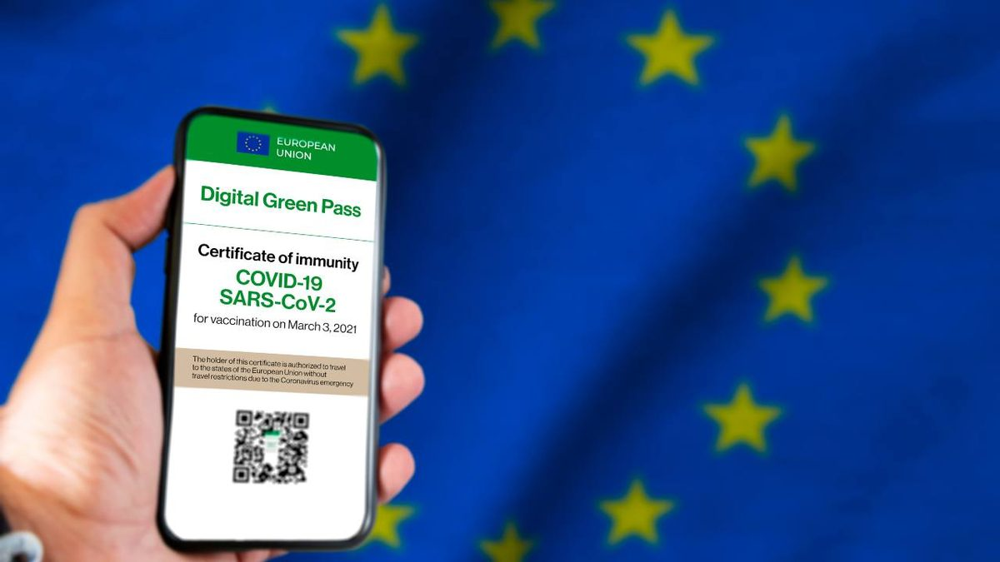

#APPROFONDIMENTI👥
⬆️📌DIGITAL GRENN PASS - COS'E' E COME OTTENERLO
È online da pochi minuti la piattaforma Digital Green Certificate, all’indirizzo https://www.dgc.gov.it, dove gli italiani possono scaricare il green pass.
✅ LA PIATTAFORMA E' ANCORA IN FASE DI SVILUPPO, MA TUTTE LE CERTIFICAZIONI ASSOCIATE ALLE VACCINAZIONI VERRANNO RESE DISPONIBILI ENTRO IL 28 GIUGNO, PRIMA DELL'ENTRATA IN VIGORE UFFICIALE PER TUTTA EUROPA DAL 01 LUGLIO 2021.
Se hai ricevuto via sms o email il codice per avvenuta vaccinazione, test negativo o la guarigione da COVID-19 puoi già scaricare la Certificazione verde.
CHE COS’È?
👉 È una Certificazione in formato digitale e stampabile, emessa dalla piattaforma nazionale del Ministero della Salute, che contiene un QR Code per verificarne autenticità e validità. Essa potrà essere richiesta per partecipare a eventi pubblici, per accedere a residenze sanitarie assistenziali o altre strutture, spostarsi in entrata e in uscita da territori classificati in "zona rossa" o "zona arancione". Dal 1 luglio sarà valida come EU digital COVID certificate e renderà più semplice viaggiare da e per tutti i Paesi dell'Unione europea e dell’area Schengen.
COME FUNZIONA?
👉 In Italia è il Ministero della Salute a rilasciare la Certificazione verde COVID-19 attraverso la Piattaforma nazionale, sulla base dei dati trasmessi dalle Regioni e Province Autonome.
Ecco le principali caratteristiche di funzionamento.
- Dopo la vaccinazione oppure un test negativo oppure la guarigione da COVID-19, la Certificazione viene emessa automaticamente in formato digitale e stampabile dalla piattaforma nazionale https://www.dgc.gov.it/web/.
- Quando la Certificazione sarà disponibile, riceverai un messaggio via SMS o via email, ai contatti che hai comunicato quando hai fatto il vaccino o il test o ti è stato rilasciato il certificato di guarigione; il messaggio contiene un codice di autenticazione (AUTHCODE) e brevi istruzioni per recuperare la certificazione.
- La certificazione contiene un QR Code con le informazioni essenziali. Agli operatori autorizzati al controllo devi mostrare soltanto il QR Code sia nella versione digitale, direttamente da smartphone o tablet, sia nella versione cartacea.
- La verifica dell’autenticità del certificato è effettuata dagli operatori autorizzati, per esempio nei porti e negli aeroporti, esclusivamente tramite l’app VerificaC19, nel rispetto della privacy.
- Se il certificato è valido, il verificatore vedrà soltanto un segno grafico sul proprio dispositivo mobile (semaforo verde) e i tuoi dati anagrafici: nome e cognome e data di nascita. Il verificatore può chiederti di mostrare anche un documento di identità in corso di validità.
- In caso non disponessi di strumenti digitali, puoi recuperare il certificato sia in versione digitale sia cartacea con la Tessera Sanitaria e con l’aiuto di un intermediario: medico di medicina generale, pediatra di libera scelta, farmacista.
- L’emissione della Certificazione è gratuita per tutti, disponibile in italiano e in inglese e, per i territori dove vige il bilinguismo, anche in francese o in tedesco.
- Le Certificazioni verdi COVID-19 associate a tutte le vaccinazioni effettuate a partire dal 27 dicembre 2020 verranno generate in automatico entro il 28 giugno.
- Per un periodo transitorio, fino al 30 giugno 2021, le documentazioni rilasciate dalle Asl, laboratori, medici e farmacie attestanti l’avvenuta vaccinazione, la guarigione dall’infezione o l’esito negativo di un test molecolare o antigenico effettuato nelle 48 ore antecedenti avranno la stessa validità della Certificazione verde COVID-19 - EU digital COVID certificate.
- Il certificato non è un documento di viaggio. I dati scientifici relativi alla vaccinazione, ai test e alla guarigione dalla COVID-19 continuano a evolvere, anche alla luce delle nuove varianti del virus che destano preoccupazione. Prima di mettersi in viaggio, verificare le misure sanitarie pubbliche applicabili e le relative restrizioni applicabili nel luogo di destinazione.
COME OTTENERLO?
👉 Acquisire la Certificazione verde COVID-19 è semplice. Sono stati previsti più canali, con o senza identità digitale, in piena autonomia o con un aiuto.
- Tramite il sito https://www.dgc.gov.it/web/ con identità digitale.
Dopo esserti autenticato con le tue credenziali SPID o CIE, puoi acquisire la Certificazione verde COVID–19 - Con Tessera Sanitaria o documento di identità puoi ottenere la Certificazione verde COVID–19 senza utilizzare l’identità digitale (SPID o CIE). Se possiedi la Tessera Sanitaria inserisci: le ultime 8 cifre del numero identificativo della tua tessera sanitaria, la data di scadenza della stessa, uno dei codici univoci ricevuti con: il tampone molecolare (CUN), il tampone antigenico rapido (NRFE), il certificato di guarigione (NUCG). In alternativa a questi codici, puoi inserire il codice autorizzativo (AUTHCODE) ricevuto via e-mail o SMS ai recapiti che hai comunicato in sede di prestazione sanitaria.
- Se non possiedi la Tessera Sanitaria, in quanto non sei iscritto al SSN, inserisci: il tipo e numero di documento che hai fornito in sede di esecuzione del tampone o di emissione del certificato di guarigione, la data di scadenza della stessa, uno dei codici univoci ricevuti con: il tampone molecolare (CUN), il tampone antigenico rapido (NRFE), il certificato di guarigione (NUCG). In alternativa a questi codici, puoi inserire il codice autorizzativo (AUTHCODE) ricevuto via e-mail o SMS ai recapiti che hai comunicato in sede di prestazione sanitaria.
- Tramite il Fascicolo Sanitario Elettronico. Puoi acquisire la certificazione verde COVID-19 accedendo al tuo Fascicolo Sanitario Elettronico, con le modalità previste nella tua Regione di assistenza. La Certificazione verde COVID-19 è messa a disposizione in formato scaricabile e stampabile (PDF). Vai al sito del Fascicolo Sanitario Elettronico Regionale: https://www.fascicolosanitario.gov.it/fascicoli-regionali
- Tramite App:
Immuni, Puoi acquisire la Certificazione verde COVID-19 utilizzando l’App Immuni attraverso l’apposita sezione “EU digital COVID certificate” visibile nella schermata iniziale della APP.
Presto potrai acquisire la Certificazione verde COVID-19 utilizzando l’App IO, ricevendo direttamente un messaggio ogni volta che la Piattaforma nazionale rilascerà un certificato intestato a te. - Con l’aiuto di medici di medicina generale, pediatri di libera scelta, farmacie.
Il medico e il farmacista, accedendo con le proprie credenziali al Sistema Tessera Sanitaria, potranno recuperare la tua Certificazione verde COVID-19. Serviranno il tuo codice fiscale e i dati della Tessera Sanitaria che dovrai mostrare loro. La Certificazione verde COVID-19 ti sarà consegnata in formato cartaceo o digitale.
Se lo desideri, iscriviti ai mie canali social per restare aggiornato ⬇️
Social MediaInoltre se hai trovato utile ed interessante questo articolo, non esitare a condividerlo, a lasciare un tuo mi piace 👍, o seguire la mia pagina Facebook, per sostenermi e continuare ad informare. Grazie anticipatamente a chi vorrà farlo.